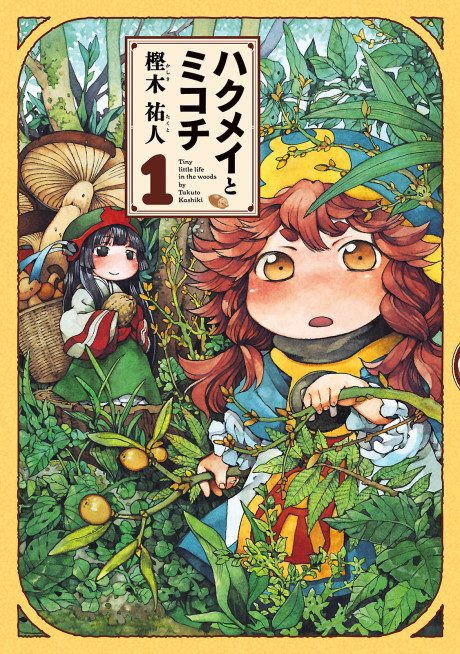

Hakumei and Mikochi
ハクメイとミコチ
Two tiny girls, only nine centimetres tall, live together in a tree house in the forest and enjoy their small everyday lives.
After the anime, read the manga from Chapter 28.
7.4AniList score
—Animeter, no votes yet
12episodes
Rate it or report where you stopped
Anime finished. Where does the manga pick up?
Start at Chapter28
The anime's story effectively ends around chapter 28 (its finale also uses material from chapters 30 and 33). Chapters 14, 18, 22, 28, 29, 31 and 32 were skipped, so start at chapter 28 or chapter 14 to catch everything.
128ongoing
Season 1Start reading here